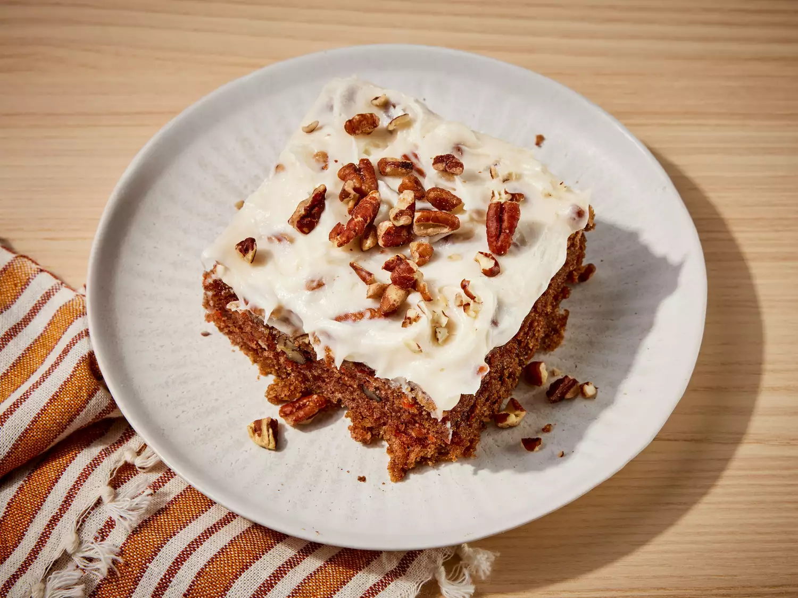

Home Page
Carrot Cake

Description
This top-rated carrot cake recipe is one of our most popular cake recipes.
It makes a moist, light, and perfectly spiced fluffy cake topped with a rich cream cheese frosting. What's not to love?
Ingredients
- 2 cups white sugar and 1 ¼ cups vegetable oil
- 4 large eggs and 2 teaspoons vanilla extract
- 2 cups all-purpose flour and 2 teaspoons baking soda
- 2 teaspoons baking powder and 2 teaspoons ground cinnamon
- ½ teaspoon salt and 3 cups grated carrots
Steps
- Gather all ingredients. Preheat the oven to 350 degrees F (175 degrees C).
Grease and flour a 9x13-inch pan.
- Beat white sugar, oil, eggs, and 2 teaspoons vanilla together in
a large bowl with an electric mixer until well combined.
- Mix in flour, baking soda, baking powder, cinnamon, and salt;
stir in carrots, then fold in 1 cup pecans.
- Pour into the prepared pan.
- Bake in the preheated oven until a toothpick inserted into center comes out clean, about 40 minutes.
Cool in the pan for 10 minutes, then turn out onto a wire rack and cool completely.
- Beat confectioners' sugar, cream cheese, butter, and 1 teaspoon vanilla together
in a large bowl with an electric mixer until frosting is smooth and creamy.
- Stir in 1 cup chopped pecans.
- Frost cooled cake. Serve and enjoy!